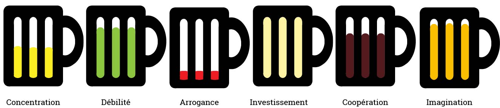

Pierre Romon
Fiche d'identité
L'Homme. Le Mythe. La Légende. Le Monstre. La puissance d'un Dieu assoiffé... et plutôt doué pour éditer les données du Domaine.
Biographie
Jeunesse
// Données confidentielles // Pour plus d'informations, mp bb.
Utcéen
Après avoir travaillé pendant 6 mois pour une compagnie privée d'exploration dimensionnelle, Pierre Romon intégra la section 42.5 (Fev rules) de l'UTC le 28 février 121210. Il gravit les échelons un à un au sein de l'union jusqu'à être aujourd'hui GI01. Suite à certaines prouesses (il a quand même pratiqué avec brio et style la nage indienne dans une rivière composée à 90% d'eau) lors de ses dernières missions, le grade de GI02 devrait lui être attribué d'ici peu. Ses différentes opérations en milieu houblonné ont développé au fur et à mesure chez notre pignouf n°1 une passion pour ce fameux liquide composé à 90% d'eau, communément appelé bière.
Opérations
Integration16
Toute première opération de notre jeune recrue, l'Integration16 a été une super opportunité pour Pierre de découvrir en situation réelle ce qu'est une opération. Membre de la Team Anim, il a avec ses coéquipiers principalement supervisé le bon déroulement de FortBF et des Olympiades mais a également participé à la création de nombreuses épreuves pour la nouvelle section 43 de l'UTC.
IntegFev17
La première opération où notre jeune Utcéen s'est beaucoup investi a été l'IntegFev16 pour laquelle il a tenu le rôle de président. L'opération visait à permettre le recrutement d'une nouvelle section (43.5) au sein de l'UTC. Au-delà de remplir l'objectif principal, il décida de révolutionner les méthodes de recrutement. Les nouvelles phases de recrutement s'inspirent désormais directement de l'IntegFev16. C'est au cours de cette opération que Pierre, encore bien bleu, apprit les stratégies fondamentales pour mener à bien des opérations en tout genre. L'IntegFev16 a été courronnée de succès dans tous les domaines. Cependant, avec le recul, les résultats de cette opération resteront en partie un échec pour Pierre.
Pierre Romon
- Nom : Romon
- Prénom : Pierre, Jacques, Daniel
- Nom de code : CaillouxZinzin
- Origine : Planète Terre - Systême Helios - Dimension C.137
- Date de naissance : 21/03/121191
- Age : 22 ans (hors cryogénie)
- Sexe : Masculin
- Race : Terrien
- Taille : 1.89 m
- Poids : 80 kg (avant tacos)
- Regime : Tout sauf des légumes (burk)
- Affiliation : UTC (Union Technologique Cosmique)
- Matricule : romonpie
- Grade : GI02
- Spécialisation : Biérologie
- Jutsu : Suiton, invocation de la bière
- Opérations : IntegFev17 | PMDE17 | IF18 | FDP18 | SDF18 | Comet
PMDE17
Opération printanière se déroulant principalement sur la planète-monde JMDE, le PMDE17 fut une totale réussite, d'une part à ses acteurs mais également à une bonne dose de chance et de superbes contidtions météorologiques. Pierre y joua le rôle de Resp Anim où il encadra une Team Anim aussi explosive que débile. L'objectif principal fut donc atteint, mais la Team Anim termina l'opération sans remplir un objectif secondaire : introduire une chèvre à l'Estu Parking.
IF18
Cette opération de grande ampleur a été mal vécue par notre Cailloux national qui faisait partie de la Team Anim. Des résultats corrects dans les tâches qui lui étaient attribuées mais un investissement général qui laissait clairement désirer. Choc et déception. L'opération fut un franc succès mais Pierre n'y joua que le rôle de figurant.
FDP18
Ce one-shot devait à l'origine se péréniser pour être répété chaque année. Des procédures administatives propres à l'UTC ont mis cependant des bâtons dans les roues de l'équipe en charge de l'opération. Malgré tous ses efforts, Pierre qui était alors Vice-Président ne put rien faire pour en empêcher son échec.
SDF18
En binôme avec son fidèle acolyte Kylian Giraud, Pierre remplit le rôle de Responsable Bar dans le cadre de l'opération. Il put donc ainsi mettre à profit ses connaissances et ses contacts pour remplir à bien son devoir. Il en profita également pour agrandir sa base de données et son réseau propres à ce milieu. L'opération se déroula sans accrocs non sans une très belle performance au niveau du bar, performance due à un choix réfléchi et à des techniques efficaces au niveau des tireuses.
PTP-P18
Trésorier lors de l'opération PTP-P18, Pierre participa à une excursion d'exploration jusqu'à Amsterdam en passant par Bruxelles et Gand (visite de la Brasserie Huygue). Il organisa ce voyage mais aussi une autre mission vers Berlin. L'opération fut plus ou moins fructueuse malgré ses efforts.
COMET
Opération de longue haleine qui dure déjà depuis près de 2 ans, les missions ESTU sont de mieux en mieux réussies. Cela est du à une nouvelle politique au niveau de leur organisation dans le but d'améliorer l'expérience des utilisateurs tout en diminuant les coûts. Cette politique a été menée pendant ces deux années par Pierre et Kylian qui se partagent la présidence de l'opération.
Profil psychologique
Les résultats de l'analyse psychologique de la recrue Pierre Romon ont été assez étranges. "Débile mais pas con", ce sont les mots utilisés par les psychologues pour décrire ce specimen. Sa passion pour la bière transparait à travers la forme du graphe, graphe réalisé par lecture du subconscient du sujet.
